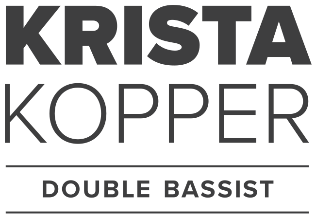
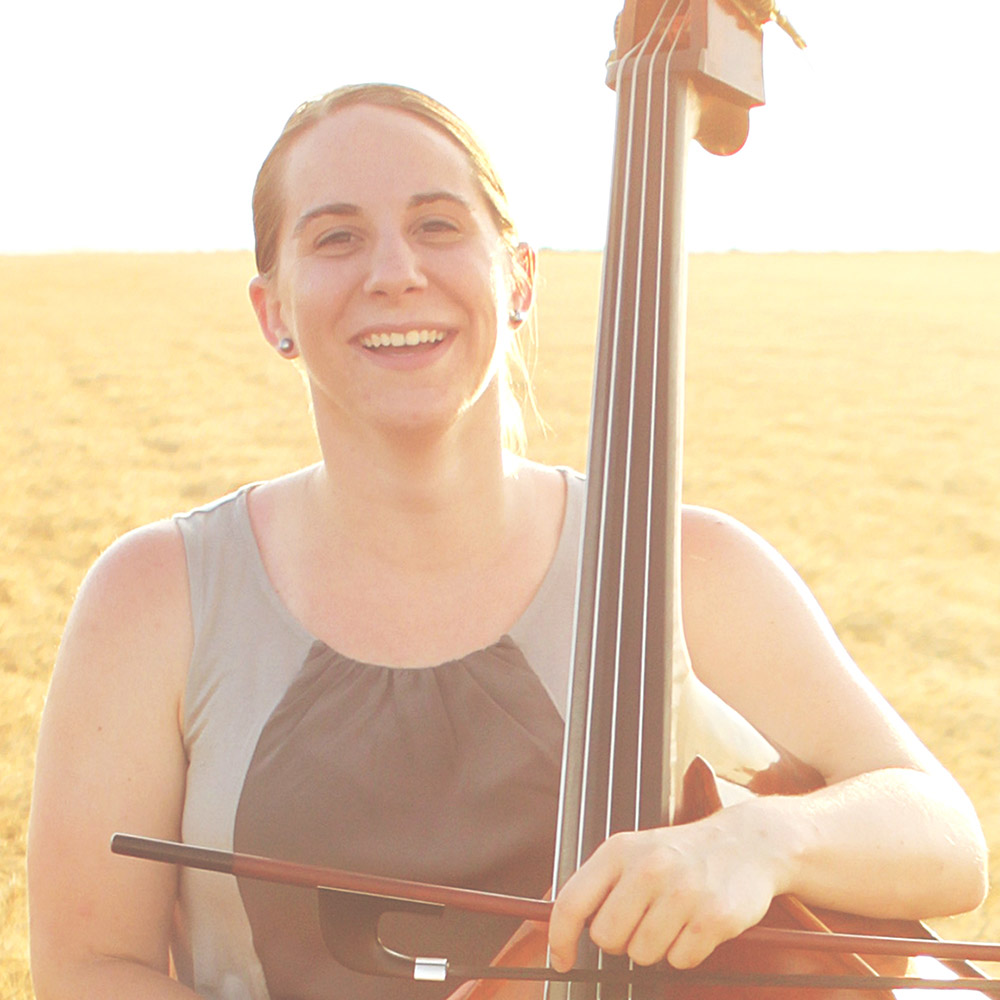

<!DOCTYPE html>
<html>
<head>
   <meta charset="utf-8">
   <meta name="viewport" content="width=device-width, initial-scale=1.0">
   <title>Krista Kopper</title>
   <link rel="stylesheet" href="styles/styles.css">
   <script src="https://use.fontawesome.com/458ed8996c.js"></script>
   <link href="https://fonts.googleapis.com/icon?family=Material+Icons" rel="stylesheet">
   <link href="https://fonts.googleapis.com/css?family=Open+Sans:300,400i,400,800" rel="stylesheet">
</head>

<body>

   <header id="header-anchor">
      <nav>
         <div class="nav container">
            <div class="left">
               <a href="#header-anchor"></a>
            </div>
            <div class="right">
               <ul>
                  <li><a href="#recordings-anchor">Recordings</a></li>
                  <li><a href="#bio-anchor">Bio</a></li>
                  <li><label for="modal-1">Contact</label></li>
               </ul>
            </div>
         </div>
      </nav>
      <div class="hero-container">
         <div class="hero">
            
         </div>
         <a class="button" href="#recordings-anchor"><span>Listen</span><i class="material-icons md-18">play_arrow</i></a>
      </div>
   </header>


   <section class="section-recordings" id="recordings-anchor">
      <div class="border">
         <div class="recordings container">
            <h1>Recordings</h1>


            <article class="song">
               <div class="button-container">
                  <button class="playbutton">
                     <i class="material-icons">play_arrow</i>
                  </button>
               </div>
               <div class="right">
                  <h3 class="title">Nothing that is not there and the nothing that is</h3><h3 class="performer">– Aaron Wyanski</h3>
                  <p class="song-info">I commissioned this piece along with Mathew Nichols, cello and Megan Lathan, viola.</p>
               </div>
            </article>

            <article class="song">
               <div class="button-container">
                  <button class="playbutton">
                     <i class="material-icons">play_arrow</i>
                  </button>
               </div>
               <div class="right">
                  <h3 class="title">Xenakis Roscobeck</h3><h3 class="performer">– The Hartt School 2016</h3>
                  <p class="song-info">Krista Kopper, Bass and Mathew Nichols, Cello</p>
               </div>
            </article>

            <article class="song s3">
               <div class="button-container">
                  <button class="playbutton">
                     <i class="material-icons">play_arrow</i>
                  </button>
               </div>
               <div class="right">
                  <h3 class="title">Gubaidulina Pantomime</h3><h3 class="performer">– The Hartt School 2016</h3>
                  <p class="song-info">Krista Kopper, Double Bass and Eun-Hee Park, Piano</p>
               </div>
               <div id="timeline">
                  <div id="playhead"></div>
               </div>
            </article>

            <article class="song s4">
               <div class="button-container">
                  <button class="playbutton">
                     <i class="material-icons">play_arrow</i>
                  </button>
               </div>
               <div class="right">
                  <h3 class="title">Night Garden Excerpt</h3><h3 class="performer">– Robert Carl, Composer</h3>
                  <p class="song-info">The Hartt School Bass Band Ensemble 2015</p>
               </div>
               <div id="timeline">
                  <div id="playhead"></div>
               </div>
            </article>

         </div>
      </div>
   </section>


   <section class="section-bio" id="bio-anchor">
      <h1>bio</h1>
      <div class="bio container">
         <div class="left">
            <p>Double bassist, Krista Kopper has a diverse background of music making. Her experiences have brought her from the pit orchestras of Mozart operas and Sondheim musicals, to appearances with the Wichita Symphony, and everything in-between, including performances with The Celtic Women and bluegrass groups. In 2013 she attended the Eastern Music Festival.</p><p>An avid programmer of new music she has not only performed works by some of the leading twentieth and twenty-first century composers, she has also commissioned, recorded, and premiered numerous works by living composers both as a soloist and chamber musician.</p><p>Krista has a bachelor’s degree in music education as well as a double bass performance degree with an emphasis on jazz studies from Wichita State University. She recently completed a master’s degree in double bass performance at The Hartt School where she studied with Robert Black. She is based in the Twin Cities area and teaches at University of Northwestern – St. Paul.</p>
         </div>
         <div class="right">
            <h6>She has Performed With:</h6>
            <ul>
               <li>The Forum Theater</li>
               <li>The Monomoy Theater</li>
               <li>Wichita Symphony Orchestra</li>
               <li>Beth El Temple</li>
               <li>The Nutmeg Symphony Orchestra</li>
               <li>The Wadsworth Museum</li>
               <li>New York University</li>
               <li>The Jewish Museum</li>
               <li>2015 International Society of Bassists Convention</li>
               <li>Wesleyan University</li>
               <li>Tabor College</li>
               <li>2011 ASTA Convention</li>
               <li>Wichita Music Theater for Young People</li>
            </ul>
         </div>
      </div>
   </section>

   <footer>
      <div class="footer container">
         <div class="left">
            <a href="#header-anchor"></a>
         </div>
         <div class="modal">
            <label for="modal-1">
               <div class="modal-trigger">Get in touch</div>
            </label>
            <input class="modal-state" id="modal-1" type="checkbox" />

            <div class="modal-fade-screen">
               <div class="modal-inner">
                  <div class="modal-inner-border">

                     <div class="modal-close" for="modal-1"></div>
                     <div class="contact-head-container">
                        
                        <div class="text-container">
                           <h2>Get in touch</h2>
                           <p>I’m always open to new opportunities, gigs, etc.<br>Let’s work together.</p>
                        </div>
                     </div>

                     <form action="https://formspree.io/zacharem@gmail.com" method="POST">
                        <div class="form-container">
                           <div class="left">
                              <input type="text" name="name" placeholder="Name">
                              <input type="email" name="_replyto" placeholder="Email">
                           </div>
                           <textarea name="user-message" name="message" placeholder="Message"></textarea>
                        </div>
                        <input type="submit" value="Send">
                     </form>

                  </div>
               </div>
            </div>

         </div>
      </div>
   </footer>


   <script src="js/jquery-3.0.0.min.js" type="text/javascript"></script>
   <script src="js/smooth-scroll.js" type="text/javascript"></script>
   <script src="js/modal.js" type="text/javascript"></script>
   <script src="js/nav-hide.js" type="text/javascript"></script>
   <script src="js/player.js" type="text/javascript"></script>
</body>
</html>
